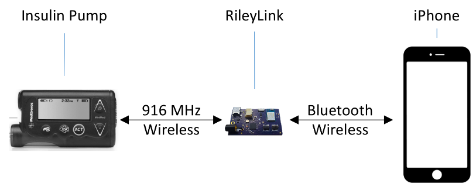

General
Loop has both Hardware and Software requirements. In general, to use Loop you need to have six components.
- Compatible insulin pump
- Compatible CGM
- RileyLink
- Compatible iPhone/iPod Touch
- Apple computer running Mac OS X 10.11.5 or later
- Xcode (a free Apple application)
You will need to be able to install software on your computer and possibly sign up as an Apple Developer to install the Loop app to your iPhone. For the most part, if you are comfortable with installing software programs on your computer, you will have no problem building and running Loop. There are detailed step-by-step instructions included in this guide. You should be doing this yourself so you can understand how to fix it WHEN it breaks. You may want to help another person get set up on Loop, and that is noble, but you will serve them much better if you support them doing the work themselves, rather than doing it for them.
Hardware
 The following information is a listing of compatible hardware used with Loop.
The following information is a listing of compatible hardware used with Loop.
Insulin Pump (Required)
There are a number of insulin pumps manufactured between 2006 – 2012 by Medtronic which are compatible. Compatibility has two requirements; (1) pump model and (2) firmware.
The Loop-compatible pumps are as follows:
| Insulin Pump | |||||
|---|---|---|---|---|---|
| MM 515/7152 | MM 522/7222 | MM 523/7233 | MM 554/7543 | ||
| CGM | Dexcom G41 | ✅ | ✅ | ✅ | ✅ |
| Dexcom G5 | ✅ | ✅ | ✅ | ✅ | |
| MM CGM | ✅ | ✅ | ✅ | ✅ | |
1. Offline access to glucose requires a Receiver with Share and the Share2 app to be running on the same device. Internet-dependent access via Share servers is also supported.
2. Pump must have a remote ID added in the Remote Options menu.
3. Early firmware (US <= 2.4A, AU/EUR <= 2.6A) is required for using Closed Loop and Bolus features.
All pumps MUST have a Remote ID added in the pump settings, any group of numbers will do. For x22 pumps use Main Menu -> Utilities -> Remote Options -> On -> Add ID, while for x23 pumps use Main Menu -> Utilities -> Connect Devices -> Remotes -> On -> Add ID. 723/523/754/554 pumps should also be configured with MySentry. MySentry pairing is accomplished by following the instructions at Loop settings -> RileyLink -> MySentry Pair while this screen is being displayed.
What model is my pump?
To determine your pump model, look at the back side of your pump. There should be a sticker on the underside of the pump. On the right hand side of the sticker it says REF MMT-XXXXXX

In the example above it says the pump model is: MMT-722NAS
MMT Pump Manufacturer Model (MiniMed Medtronic)
722 Pump Model Number
NA Pump Region (NA=North America, CA=Canada/Australia, WW=Worldwide)
S Pump Color (S=Smoke, L=Clear/Lucite, B=Blue, P=Pink/Purple)
(Some pumps may have an “L” or “S” before the NA, e.g. a model number like MMT-LNAS. There is at least one report of successful looping with an LNAS pump, so as far as we know LNA is equivalent to NA here, but data are limited at present.)
The difference between the Medtronic 500 series and the 700 series pumps is the size of the insulin reservoirs. The 500 series pumps use a 180 unit reservoir, and the 700 series pumps use a 300 unit reservoir (or smaller 180 unit reservoir if you want).
The difference between the Medtronic x22 pumps and the x23 pumps is primarily three features. The x23 pumps will allow for basal and bolus increments of 0.025 units, whereas the x22 pumps have larger increments of 0.05 units. Loop will have the bolus delivery automatically rounded by the pump to the units available in the pump model, and any smaller adjustments (to make up for the rounding) will be made through Loop’s use of temp basals. Additionally, because of the way Loop fetches information from the pump, the x23 series of pumps are slightly better at conserving battery life through the use of the MySentry. x22 pumps do not use MySentry. The x23 series pumps are also somewhat faster at delivering large boluses (up to several times faster for boluses > 10 units).
What Is my pump’s firmware?
A pump’s firmware is the internal software that runs your pump. Older Medtronic firmware allows Loop to act as a “remote control” to set temp basals and report back pump data. Newer firmware disabled that “remote control” access and therefore cannot be used with these DIY APS systems. There is currently no ability to downgrade a pump’s firmware or replace it with older firmware. So before you buy a used pump, make sure you are getting one with compatible firmware.
To find your pump’s firmware you will need to power it up. If the pump has not been powered on for some time (i.e., has been in storage without a battery for awhile), it will run through a start-up count and the firmware version will appear on the bottom right of the pump’s screen. Don’t turn away, as the Version number will only be displayed for a little while before the screen moves onto other information displays.
If the pump has been active recently or has a reservoir installed, follow these steps:
- Press the
 button on your pump.
button on your pump. - Scroll down with the
 button to the bottom of the status display.
button to the bottom of the status display. - Read the bottom line of the display.

Continuous Glucose Monitor (Required)
A continuous glucose monitor (CGM) provides Loop with current blood glucose readings (every 5 minutes, in the case of Dexcom). These readings allow Loop to predict what the current glucose trend is, and predict the future glucose based on carbohydrate input and basal profiles. The following are the types of CGMs compatible with Loop.
Dexcom G5 CGM 
Dexcom G5 receives CGM data directly to the iPhone via bluetooth and the Dexcom G5 Mobile app on your iPhone. It does not require the use of a G5 stand-alone receiver. With a Dexcom G5 system, Loop can be run offline (i.e., without internet access but still needs bluetooth on).
Dexcom G4 CGM with Share Receiver 
Dexcom G4 transmits CGM data to a Dexcom G4 Share Receiver. The receiver, in turn, connects to the Dexcom Share2 app on your iPhone via Bluetooth. The Share2 app uploads CGM data to the Dexcom servers. With a Dexcom G4 Share system, Loop can be run offline.
Medtronic CGM 
The Minimed Enlite CGM, available with the Medtronic 523/723 and 554/754, wirelessly sends blood glucose readings to the pump. Loop can read the Medtronic CGM data directly from the pump using the RileyLink. This solution can be used with Loop offline.
RileyLink (Required) 
The RileyLink is an open-source hardware device that can bridge Bluetooth Low Energy (BLE) to 916MHz wireless communication. What does that mean to you? It means RileyLink is the communication highway between your insulin pump and iPhone.

The RileyLink is available as a set of PCB files and software, with instructions on how to build your own RileyLink hardware module. All this can be found here: RileyLink Github If you aren’t up to the task of building your own RileyLink (and most of us aren’t), community members periodically do a production run of RileyLinks. You can place an order here: RileyLink order site
Apple iPhone (Required)
Loop will run on on any iPhone that is running iOS 10.0 or later. iPhones version 6 and up seem to have better bluetooth reliability.
Apple Watch (Not Required)
Loop is currently supported with all released versions of the Apple Watch and Apple Watch OS3. Cool factor is increased since the T1D can directly enter carbs and boluses straight from the watch, without needing to access the iPhone.
The status screen is shown in the left image and includes loop status, time since last loop, blood glucose and predicted eventual blood glucose. Carb and bolus screen as indicated on the picture can be accessed by force touching the watch (press hard). A loop complication exists to show BG on the watchface but the update rate is limited to ~30mins due to limitations imposed by apple to increase battery life. If constant real time monitoring is desired it is recommended to use the loop app as the main screen. This can be achieved by setting the watch to always show last opened app on wake. Loop will always have to be the last app opened for this to work.
If you add an apple watch after building loop you will need to pair your watch to your phone and then rebuild loop to enable the loop watch app to show up as an available watch app.

Apple Computer Running OS X 10.11.5 or later (Required)
To build and install Loop onto your iPhone, you will need access to an Apple computer running OS X 10.11.5 or later. “El Capitan” is OS X 10.11. “Sierra” is the newly released OS X 10.12. Access is only required when you are initially installing the Loop app, updating to a newer release, or making changes to the underlying Loop code. You do NOT need access to an Apple computer in order to troubleshoot or change Loop settings, such as basal profiles or carb ratios.
Where can you find your computer’s OS X version? Click on the Apple icon in the upper left corner of your Mac’s display. Select “About This Mac” from the dropdown menu, and it will display the OS X version number.

Software, Licenses, and Services
The following software, licenses, and services are used to manage, build, compile, deploy, and log data about Loop running on your iPhone. Not all of the items listed in this section are required, but they may improve your Loop experience This is a list of the software tools and where you can get more information about them. Installation and configuration of the required tools is in Section 4 of this document.
GitHub Access (Required)
So the most obvious thing you will need to run Loop is the “source code” itself. The code resides on GitHub. You’ll be downloading the Loop code from GitHub so that you can use it on your computer. Section 4.1.3 describes how to do that. You will need to make sure you are using a computer and internet access that allows for downloading from GitHub.
Xcode (Required)
To build and install Loop on your iPhone, you are going to use the Xcode application on your Apple computer. Xcode is available for free from the Apple App Store. Go ahead, download it!
Xcode 8.2.1 is the most recent version. If your iPhone is running iOS 10.1, you must use Xcode 8.1 or newer. Xcode 8.2.1 requires an Apple computer running OSX Sierra, or OS X El Capitan 10.11.5 or later.
Legacy versions:
- Xcode 8.0 can also be used to build Loop. Xcode 8.0 will only work with iPhones using iOS 10.0 or earlier. Xcode 8.0, similar to Xcode 8.1, requires an Apple computer running OSX Sierra, or OS X El Capitan 10.11.5 or later. You should use the Master branch of Loop v1.1 to build with Xcode 8.0.
- Xcode 7.3 can be used but only up to Loop v0.13. Subsequent versions of Loop require a more current version of Xcode.
Apple Developer Program Enrollment (Not Required, but HIGHLY recommended)
OH, how exciting is this part? You are on the way to being an official Apple Developer. Being an Apple Developer allows you to “sign” the application software. Signing tells the iPhone that the software is from a trusted source and keeps your iPhone (a little bit) safer. Apps won’t run without signing.
If you choose NOT to enroll in the Apple Developer Program, Apple only lets you sign and develop an app for 7 days. After that, Apple expires the app and it will need to be resigned and reinstalled in order to begin working again. What does that mean for you? Reinstalling your Loop app EVERY 7 DAYS to keep it working. Sound like a royal pain in the butt? It is.
If you enroll in the Apple Developer Program, the cost is $99 annually. And your Loop won’t expire for a full year. THIS IS THE HIGHLY RECOMMENDED OPTION.
Gitter (Not Required, but Highly Recommended) 
Gitter is an instant messaging/chat platform for software developers and users. It is the easiest place to seek assistance with Loop. To use Gitter, go to https://gitter.im/LoopKit/Loop and login with either a GitHub or Twitter account. This should be where you go for questions about your setup process. If you’re too nervous to ask, you can use the search function on Gitter to look if your question may have been answered recently as well. However, it’s a friendly group and questions are welcome. There is a facebook group for loop (Looped) but technical issues should primarily be resolved in the Gitter room.